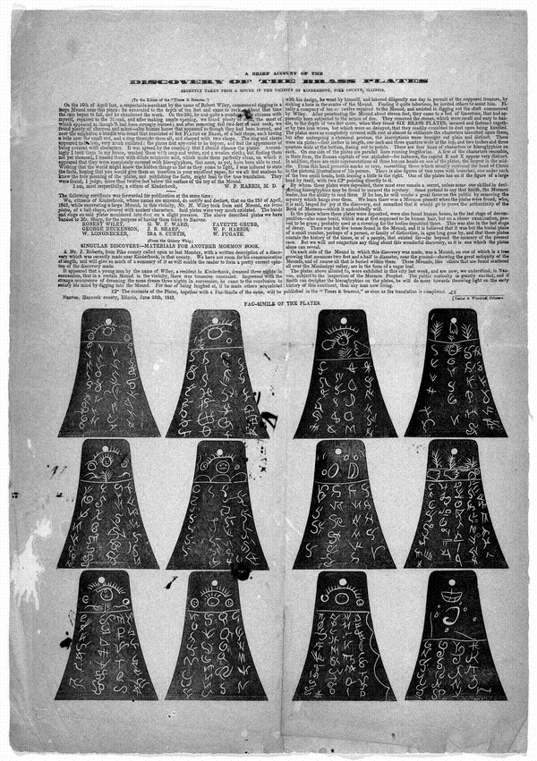

The Kinderhook forgery, and what Smith actually said
Don't useThe LDS answer holds up. Do not lead with this one.
What happened
In 1843 three men in Illinois made six small brass plates. They covered them in made-up "ancient" writing, buried them in a mound, and brought them to Joseph Smith.
The point was to see whether he would translate them.
What he said
His clerk William Clayton recorded that Smith said the plates contained the history of a descendant of Ham. The plates were later proved a hoax; one of the makers admitted it, and metal testing in 1980 confirmed a nineteenth-century origin.
Their answer, at full strength
And the church's own published position agrees with much of it. Smith never produced a translation.
He never claimed revelation about them. Don Bradley and Mark Ashurst-McGee argue he was trying a scholarly comparison, using his Egyptian alphabet papers.
How strong is this argument?
This one has a clear answer, and the answer goes largely their way. Clayton's entry is secondhand, and no translation exists.
Use it as evidence about method, not as a knockout.
What to say
"What do you make of the Kinderhook episode? I've read the church's account of it."



How they answer this — at its strongest
He made no translation at all, and the church itself published the hoax finding.
This is the church's own current published position. Joseph Smith never claimed a revealed translation, and never produced a translated text.
Don Bradley and Mark Ashurst-McGee, in 'President Joseph Has Translated a Portion' (2011), identify a specific character match against Smith's Egyptian Alphabet and Grammar. That makes the identification a plain comparison, not a revelation. Smith took the matter no further and dropped the subject. That is the opposite of a con artist walking into a baited trap.
The first-person wording is a known artifact of the History of the Church, which turned clerks' journals into Smith's voice. And the church published the forgery finding itself, in the Ensign in 1981.
The verdict
This one is answered: use it about method, not as a knockout.
The Bradley and Ashurst-McGee work is decisive, and it is good scholarship rather than spin. The 'descendant of Ham' line traces to a character match against Smith's own Egyptian Alphabet and Grammar. So it was a plain comparison, not a revealed reading. And the church made the forgery finding public itself.
What is left is narrower than critics present. The match was still wrong, because the characters mean nothing at all. That bears on how far the Egyptian Alphabet and Grammar can be trusted.
And that leads straight to the Book of Abraham case, where the same papers are the problem. Treat Kinderhook as answered on its own terms.
Sources
- Stanley B. Kimball, 'Kinderhook Plates… Appear to Be a Nineteenth-Century Hoax,' Ensign (August 1981) — the church's own publication of the testing results
- William Clayton journal, 1 May 1843 (primary)
- Utah Lighthouse Ministry (Tanner), 'The Kinderhook Plates' — documentation of the History of the Church first-person conversion